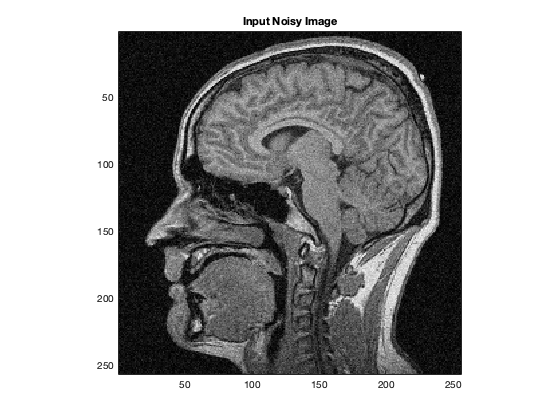
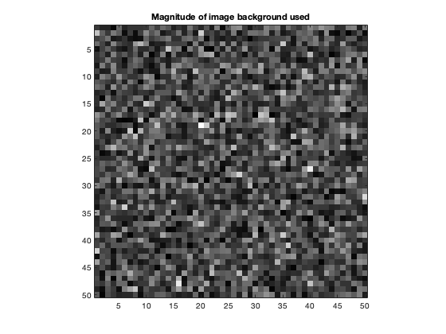
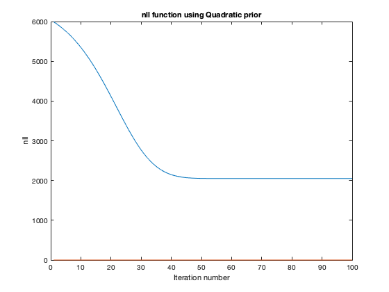
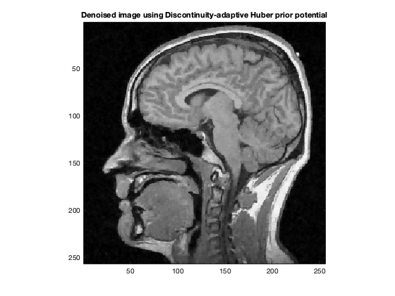
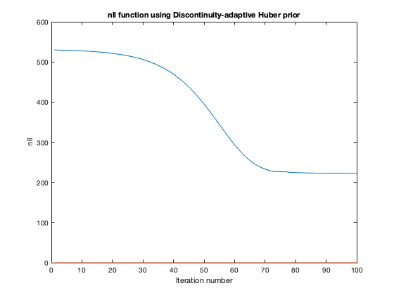
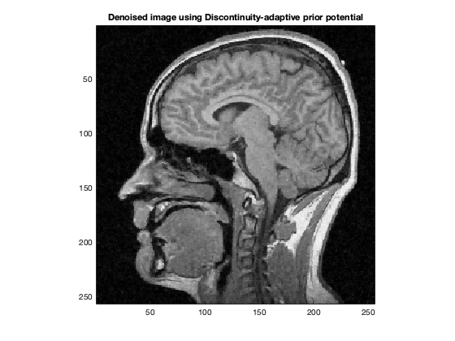
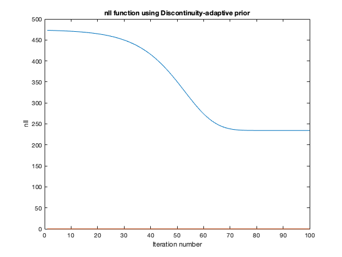

Contents
Loading and Visualizing the image
data = load('../data/assignmentImageDenoisingBrainNoisy.mat');
im = data.imageNoisy;
printImage(abs(im),'Input Noisy Image');

Estimating the Standard Deviation (Noise Level)
bg = im(1:50,1:50);
im_real = real(bg);
im_imag = imag(bg);
varReal = var(im_real(:));
varImag = var(im_imag(:));
noiseVar = mean([varReal,varImag]);
fprintf('Estimated Standard Deviation = %f\n\n', noiseVar);
printImage(abs(bg),'Magnitude of image background used');
Estimated Standard Deviation = 0.003585

MRF Potential: Quadratic
alphaOptimal = 0.991;
[im_r_op, nllHistory] = denoise(im,'q',noiseVar,alphaOptimal);
fprintf('Optimal alpha=%f\n\n', alphaOptimal);
printImage(abs(im_r_op),'Denoised image using Quadratic prior potential');
figure;
plot(nllHistory);
title('nll function using Quadratic prior');
xlabel('Iteration number');
ylabel('nll');
Optimal alpha=0.991000

MRF Potential: Discontinuity-adaptive Huber
alphaOptimal = 0.9992;
gammaOptimal = 0.017;
[im_r_op, nllHistory] = denoise(im,'h',noiseVar,alphaOptimal,gammaOptimal);
fprintf('Optimal alpha=%f, Optimal gamma=%f\n\n', alphaOptimal, gammaOptimal);
printImage(abs(im_r_op),'Denoised image using Discontinuity-adaptive Huber prior potential');
figure;
plot(nllHistory);
title('nll function using Discontinuity-adaptive Huber prior');
xlabel('Iteration number');
ylabel('nll');
Optimal alpha=0.999200, Optimal gamma=0.017000
 
MRF Potential: Discontinuity-adaptive
alphaOptimal = 0.999;
gammaOptimal = 0.02;
[im_r_op, nllHistory] = denoise(im,'d',noiseVar,alphaOptimal,gammaOptimal);
fprintf('Optimal alpha=%f, Optimal gamma=%f\n\n', alphaOptimal, gammaOptimal);
printImage(abs(im_r_op),'Denoised image using Discontinuity-adaptive prior potential');
figure;
plot(nllHistory);
title('nll function using Discontinuity-adaptive prior');
xlabel('Iteration number');
ylabel('nll');
Optimal alpha=0.999000, Optimal gamma=0.020000
 